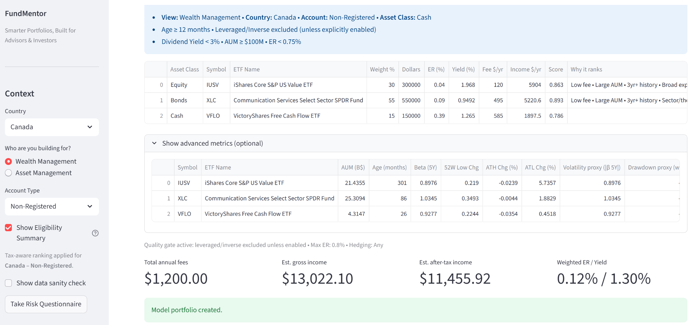
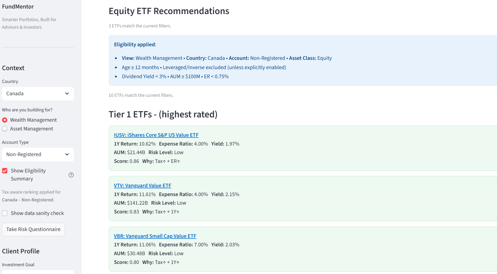

FundMentor helps advisors and investors move from ETF ideas to client-ready portfolio decisions with data-driven logic, portfolio diagnostics, and clearer reporting.
It is designed for people who want more than a screener: clearer fit, better structure, stronger explanations, and a more practical review workflow.
Move from broad ETF exploration to a more structured planning and review process.
Most tools either stop at screening or bury the logic behind the output. FundMentor is built to help users think more clearly about portfolio construction, overlap, concentration, tax fit, and how to explain the result.
Bring structure to planning with model-building logic, guardrails, shortlist controls, and cleaner implementation thinking.
Turn allocations, ETF choices, and diagnostics into plain-English reasoning that is easier to discuss with clients and stakeholders.
Look beyond ETF rankings to portfolio character, concentration, overlap, drift, strengths, and watch items.
A simple workflow from idea generation to review and action.
Set the objective, shape the allocation, and create a shortlist that reflects the selected context.
Browse the broader ETF universe while comparing suggested candidates for the current goal, account, and country setup.
Review strengths, watch items, concentration, overlap, and overall fit using richer diagnostics and notes.
Compare current holdings to target and see where changes may be needed before implementation.
The current demo is centered on ETFs, with logic designed to support planning, diagnostics, and reporting rather than just screening.
Shape model portfolios with goal-aware logic, clearer sleeve design, and more practical shortlist controls.
Review ETFs using return, expense ratio, yield, AUM, tax-aware notes, and recommendation audit trails.
Review concentration, overlap, strengths, watch items, and portfolio character to better understand what the portfolio is actually doing.
Upload holdings, compare current versus target, and identify drift with cleaner action suggestions.
Import your own ETF lists and work with a preferred universe instead of being locked into one static list.
Generate clearer notes and reporting for client-facing or advisor-facing use.
FundMentor is evolving beyond a simple screener. The product direction is toward clearer planning, more useful diagnostics, and more practical reporting.
Help users understand why a portfolio looks the way it does.
Use account, country, and implementation-aware logic to make outputs more useful.
Portfolio Analyzer and Rebalancing Checker are designed for in-session use without storing portfolio data.


Interested in seeing how FundMentor could support your client conversations and portfolio review process? Reach out for a demo, a quote, or to discuss your use case.
Tell us a little about your team, use case, or workflow and we’ll follow up.
Open the demo request form in a new tab
By submitting, you agree to our Terms and Privacy Policy.
For professionals who want clearer planning logic, cleaner reviews, and stronger portfolio explanations.
For teams who want more structure around ETF comparison, diagnostics, and drift review.
For users who want more discipline and clarity than a screener alone can provide.
For information and education only. FundMentor does not provide personalized investment advice.